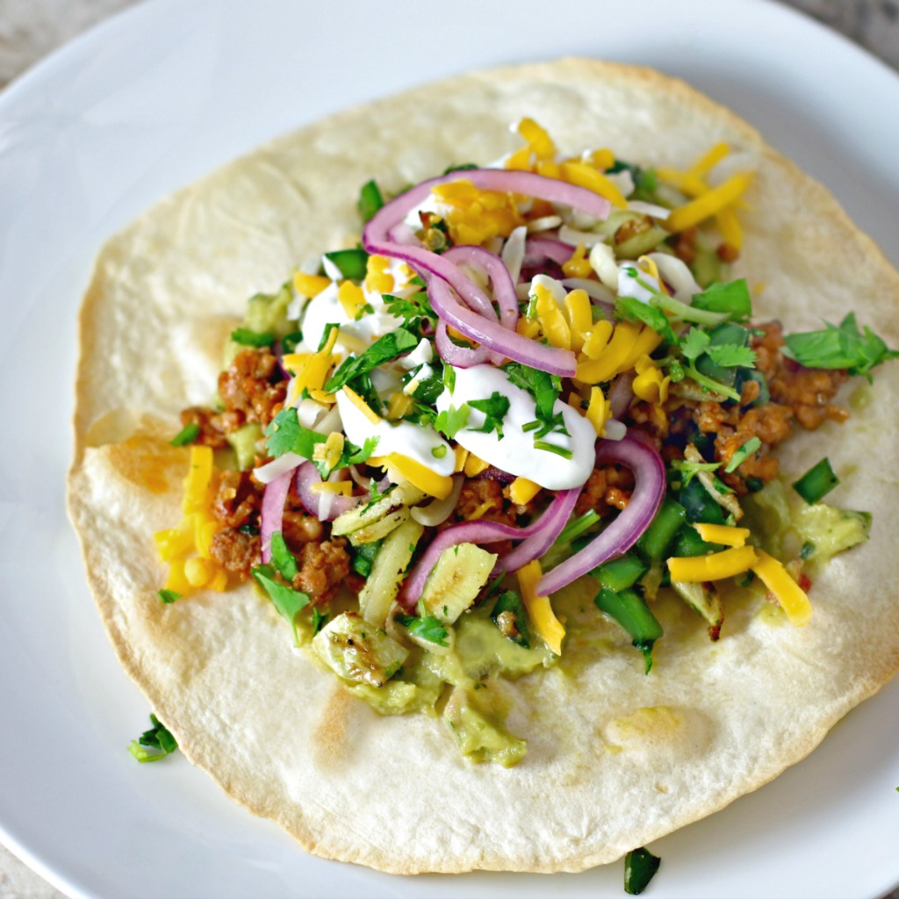

Crispy Ground Turkey Tostadas

Satiating image of a plate of Crispy Ground Turkey Tostadas
There's crispy, there's ground, there's turkey, and there's tostadas!
What else could you want?
Ingredients
- 1 red onion, halved and thinly sliced
- ¼ cup Mexican crema
- 2 limes
- ¼ teaspoon salt
- 2 tablespoons vegetable oil, divided
- 3 tablespoons chopped fresh parsley, divided
- 2 teaspoons chopped fresh dill
- 2 tablespoons all-purpose flour
- ½ cup chicken broth
- 1 cup milk
- 2 large tomatoes, chopped
- 1 tablespoon lemon juice
- 1 teaspoon salt
- 1 teaspoon ground black pepper
- ¾ cup grated Parmesan cheese
- ½ cup grated Romano cheese
- ¼ cup shredded mozzarella cheese
Steps
- Preheat the oven to 375 degrees F (190 degrees C).
- Place red onion slices and crema in separate small bowls. Zest limes into another small bowl. Halve limes and squeeze juice into a fourth small bowl.
- Stir 1 teaspoon lime juice into the bowl of crema. Add the remaining lime juice to the bowl with the red onions; stir in 1/4 teaspoon salt and let marinate at room temperature until pickled, at least 20 minutes.
- Heat oil in a skillet over medium heat. Add chayote and poblano pepper; cook, stirring constantly, until golden and tender, about 10 minutes.
- Coat tortillas on both sides with cooking spray. Place tortillas on a large baking sheet.
- Bake in the preheated oven until crisped and lightly brown, 8 to 10 minutes.
- Stir the lime zest, 1/2 the cilantro, onion powder, and 1/4 teaspoon salt into the chayote-poblano mixture. Pour mixture into a bowl.
- Heat remaining 1 tablespoon oil in the same skillet over medium heat. Add ground turkey; cook, stirring occasionally, until browned, about 7 minutes. Stir in 1/4 cup water, taco seasoning, and chili powder. Cook until water has evaporated, about 4 minutes.
- Spread guacamole over each crisped tortilla; top with chayote-poblano mixture, ground turkey, pickled onions, lime crema, and remaining cilantro.